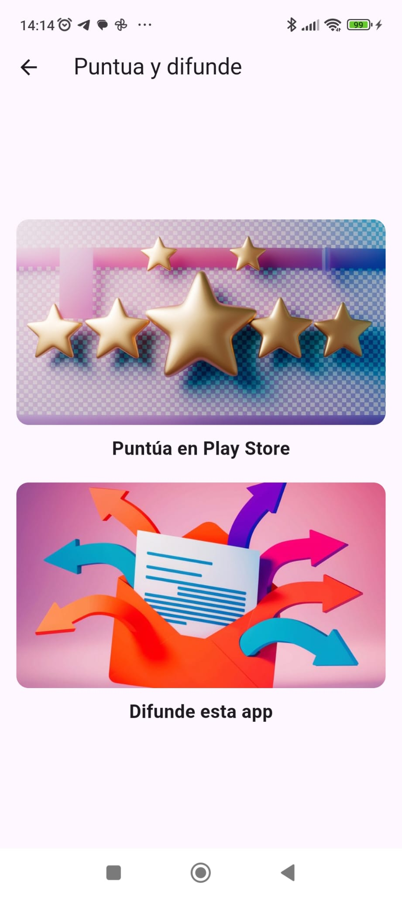
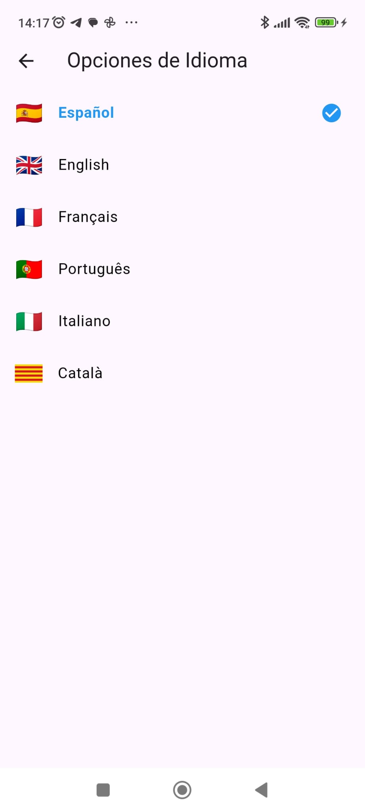

- Configuraciones
- En este apartado se puede cambiar el Nombre del usuario, el color de fondo degradado superior, el color de fondo del degradado inferior, el color del texto y la velocidad de cambio de imágenes. También es desde dónde el usuario puede eliminar la cuenta si así lo desea.

- ¿Cómo se ve mi perfil?
- En este apartado el usuario puede ver cómo se ve el propio perfil desde la colmena de otros usuarios. No se puede interactuar con uno mismo.
- Puntua y difunde la app
- En este apartado el usuario puede acceder a la play store para puntuar y difundir la app por whatsapp.

- Opciones de idioma
- En este apartado se puede seleccionar el idioma de toda la aplicación. Se puede seleccionar cualquiera de estos idiomas: Español, inglés Frances, portugués, italiano o catalán

- Ayuda
- Este es el apartado dónde e sale la guía de la app y un Agente de voz para resolver cualquier duda.
- Cerrar sesión
- Esté botón sirve para cerrar sesión en la app y salir del modo loguead
FAQ’s
- ¿Qué es lo primero que debo hacer al logarme en esta app?
- Es importante subir fotografías y contenido al proio perfil para garantizar la calidad de la app, en caso contrario los usuarios que no configuren su perfil o hagan un mal uso serán eliminados.
- Si inicio sesión con email en lugar del proveedor de Gmail, ¿Qué debo hacer?
- Es importante que si inicias sesión con correo y contraseña verifiques tu email, en tu perfil se mostrará un botón que dice “verificar email”, que al pulsarlo enviará un correo a tu email para que logres verificarlo. Una cuenta sin verificar no se mostrará en la colmena.
- ¿Cómo subir fotos?
- Pulsa algún botón flotante de la pestaña Cuenta, cómo el de subir desde galería, el de hacer una foto directamente o bien el de crear una imagen con IA (solo disponible en Plus).
- Si estoy suscrito a plus ¿cómo puedo verificarlo?
- Ve al apartado de suscripción y suscribete o si ya lo estás espera que el sistema lo actualice. Si estás teniendo problemas con esto asegúrate de tener la última versión instalada.